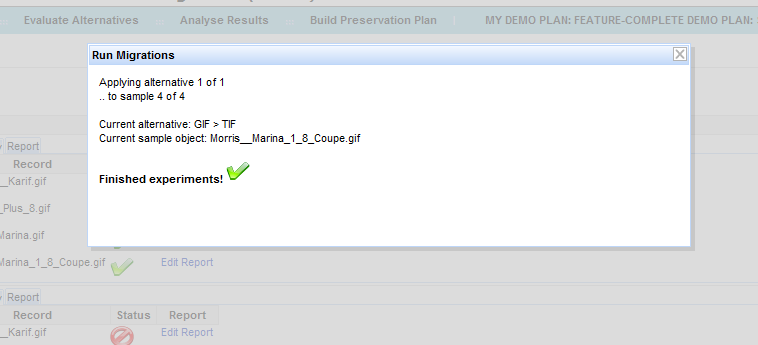
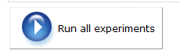

This page explains what types of experiments exist and how to run them.
In this step, all considered preseration actions are applied to all sample objects, and the outcomes are documented in detail.Correspondingly, this page provides a list of considered preservation actions at the top, similar to the view at Develop experiment. The difference is that for preservation action services, you will find a little play button like in a multimedia player:

Clicking this button will bring up a modal window for running the selected service. Clicking the green arrow in that window starts the experiments:

Clicking the green checkmark closes the window.
The experiment status as indicated by the icons can be one of the following:
 means the experiment has failed.
means the experiment has failed. means the experiment has not been executed yet.
means the experiment has not been executed yet. means the experiment has not executed successfully.
means the experiment has not executed successfully.
You can run all automated actions at once using the button at the bottom:

If you have been running actions that use quality-aware services,
such as minimee services, you will find a new link saying Show
migration result metadata below this button after the experiments
have finished.
Activating it displays the measurements
obtained from these services in a separate windows.
The lower part of the screen contains the results of experiments, i.e. the resulting files after the experiments have been run. (eg. for migration the migrated files). For migration web services that are executed by the planning tool, these files we be retrieved automatically. For all experiments that you are carrying out yourself, please upload all resulting files and documentation here.